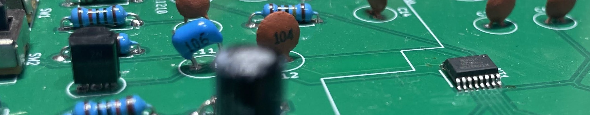
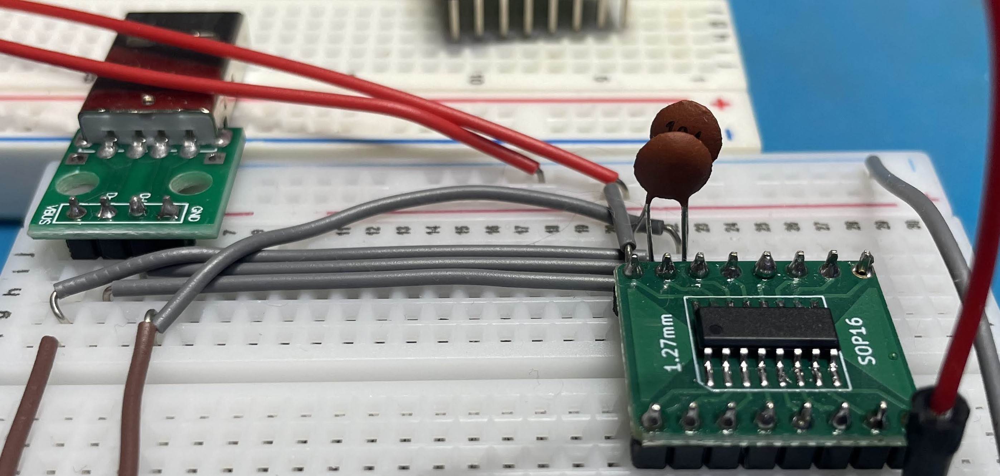
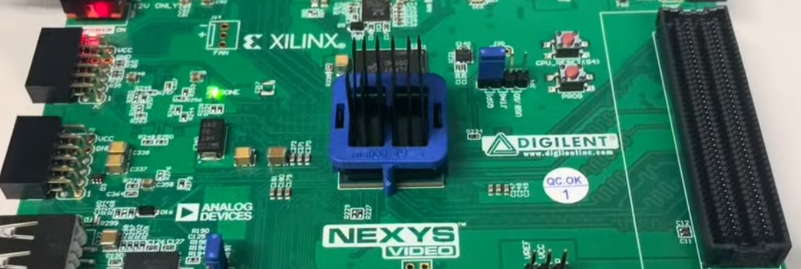

若宮 秀太
立命館大学情報理工学部 先進計算機システム研究室所属
DDRメモリに対するBADRAM攻撃手法の研究に従事しています。ハードウェアセキュリティとCPUアーキテクチャに関心があり、FPGAを用いたCPU開発なども手がけています。学生サークルの部長経験もあり、技術と組織運営の両方に知見があります。

KT0937-D8 SDRラジオチップライブラリ
SDRラジオチップ「KT0937-D8」用のライブラリ開発。電子工作やラジオ制作向けのC++ライブラリで、チップの制御と機能を簡単に利用できるようにしています。
GitHubで見る

研究活動
BADRAM: DDRメモリに対する攻撃手法の研究
先進計算機システム研究室に所属し、DDRメモリのSPD（Serial Presence Detect）を書き換える攻撃手法「BADRAM」について研究しています。この研究はメモリのセキュリティ脆弱性に焦点を当て、ハードウェアレベルでの保護手法の開発を目指しています。
研究内容
- DDRメモリのSPDに格納されているタイミングパラメータの解析
- SPDデータの改ざんによるメモリ動作への影響測定
- 攻撃手法の実装と検証
- 対策手法の提案と評価
セキュリティネットワークコース研究
セキュリティネットワークコースに所属し、ネットワークセキュリティとシステム保護に関する研究を行いました。特にIoTデバイスのセキュリティに焦点を当て、実践的な脆弱性対策を研究しました。
スキル＆専門知識
プログラミング言語
C/C++
低レベルプログラミング、ハードウェア制御、組み込みシステム開発
JavaScript
Webフロントエンド、Chrome拡張機能開発
Python
データ解析、スクリプト作成、研究用コード
Verilog/VHDL
FPGA開発、ハードウェア記述
技術スキル
電子工作
回路設計、はんだ付け、部品実装、測定器の使用
バイクメンテナンス
タイヤ交換、オイル交換、フォークオーバーホール、キャブレターオーバーホール
コンピュータアーキテクチャ
CPU設計、メモリシステム、キャッシュ、パイプライン
セキュリティ
ハードウェアセキュリティ、脆弱性分析、対策実装
経歴・活動
先進計算機システム研究室配属
DDRメモリに対するBADRAM攻撃手法の研究に従事。メモリのSPDを書き換える攻撃と対策について探求。
セキュリティネットワークコース配属
ネットワークセキュリティとシステム保護の専門課程を履修。IoTセキュリティに重点を置く。
学生サークル部長
大学の技術系サークルで部長を務め、組織運営とイベント企画を経験。
りんかん - バイク用品店ピットスタッフ
草津のバイク用品店でピットスタッフとして勤務。タイヤ交換、オイル交換、フォークオーバーホール、キャブレターオーバーホールなど専門的な作業を担当。
立命館大学情報理工学部入学
情報理工学部に入学し、コンピュータサイエンスと工学の基礎を学ぶ。
初芝立命館高校
高校では独学でプログラミングを学び始め、コンピュータ技術への理解を深める。
トルコ・イスタンブール日本人学校
中学時代はトルコのイスタンブールで過ごし、異文化に触れながら視野を広げる。
日本・大阪での小学校生活
小学3年生から小学校卒業まで大阪で過ごす。
コンピュータとの出会い
ローマ字入力のテストで苦戦したことをきっかけに、初めてのWindows XPパソコンを手に入れる。これがコンピュータへの興味の始まりとなった。
タイ・バンコク日本人学校
幼少期から小学校3年生までの7年間をタイのバンコクで過ごし、早くから国際的な環境で育つ。